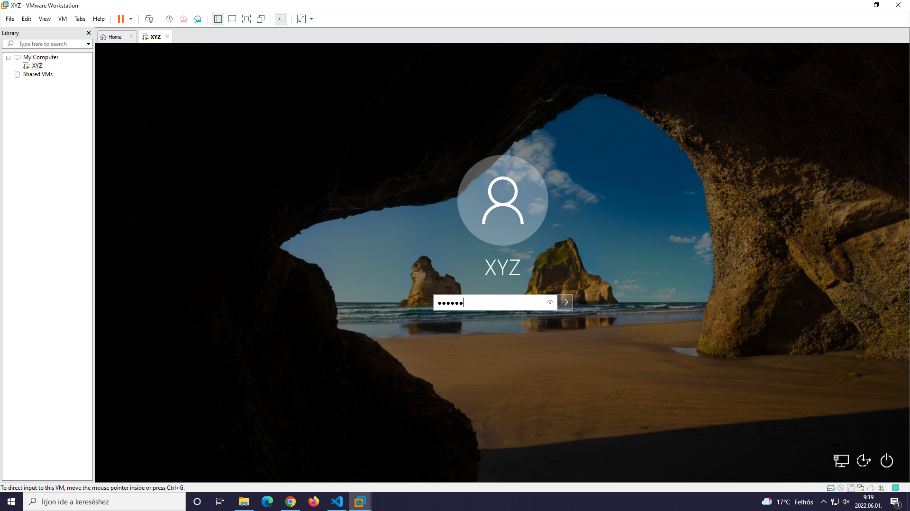

64-bit x86 Intel Core Solo, AMD Athlon 64 FX processzor, vagy azokkal megegyező teljesítménnyel rendelkező processzorok
2GB RAM szükséges, 4GB RAM vagy annál több ajánlott
1.2GB tárhely szükséges a WMWare Workstation Pro program futtatásához, illetve letöltéséhez
Konfiguráció
1. lépés: A virtuális gép létrehozása
A "WMware Workstation Pro" alkalmazás megnyításakor, válassza ki a "Create a New Virtual Machine" opciót és kattintson rá.
2. lépés: A konfiguráció kiválasztása
A "Typical" verzió kezdők számára, miközben a "Custom" fejlett felhasználók számára ajánlott.
A "Next" gomb megnyomásával folytathatja a létrehozás folyamatát.
3. lépés: Lemezfájl beillesztése
Válassza ki a számára megfelelő operácíós rendszer lemezfájlát (iso-ját).
4. lépés: Felhasználó adatainak megadása
Írja be a tetszőlegesen választott felhasználónevet és jelszavat.
5. lépés: A virtuális gép elnevezése
Válasszon egy tetszőleges nevet a virtuális gépének.
6. lépés: A virtuális gép lemezmérete
Válassza ki a lemezméretet tetszőlegesen (min 60GB).
7. lépés: A folyamat befejezése
Fejezze be virtuális gépének létrehozását.
8. lépés: Operációs rendszer telepítése
Válassza ki a tetszőleges opciók közül a számára megfelelőt.

Utolsó lépés: Bejelentkezés
Írja be az előbb megadott felhasználói adatokat és már használhatja is virtuális gépét!